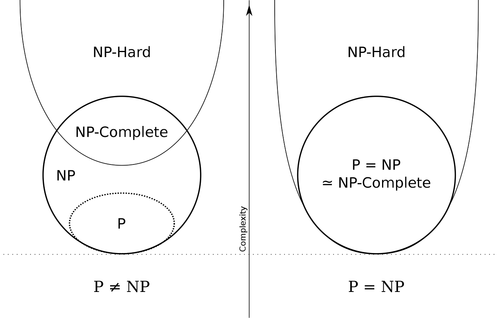

The largest part of the exam. Most questions ask for a running time, a property, or which algorithm applies.
Hash tables
A hash function maps each key to a slot. A collision is when two different keys map to the same slot, and every hash table needs a way to deal with it (GeeksforGeeks).
Chaining (closed addressing): each slot holds a linked list, and colliding keys are simply appended to the list.
Open addressing: everything stays in the array. On a collision, a rule picks another slot to try: linear probing (try the next slot), quadratic probing (try slots 1, 4, 9, … away), or double hashing (the step size comes from a second hash function).
Either way, search, insert, and delete are O(1) on average and O(n) in the worst case, when everything lands in the same slot.
Both visit every vertex and every edge once, so both run in O(V + E) with an adjacency list.
With an adjacency matrix, finding the neighbors of a vertex means scanning a whole row, so the time becomes O(V²).
Topological sort
Orders the vertices of a directed acyclic graph (DAG) so that every edge points from an earlier vertex to a later one. Think of tasks with prerequisites.
Method (Kahn's algorithm): repeatedly take a vertex with no incoming edges, output it, and delete it along with its outgoing edges. If you run out of such vertices before the graph is empty, the graph has a cycle.
Time: O(V + E).
Shortest paths
Single source: shortest paths from one vertex to all others (Bellman–Ford, Dijkstra).
Single pair: from one vertex to one other vertex. In practice you run a single-source algorithm and stop early.
All pairs: between every pair of vertices (Floyd–Warshall, Johnson).
Useful fact: any sub-path of a shortest path is itself a shortest path. This is the optimal substructure that all of these algorithms rely on.
The longest path problem is NP-hard in general, but on a DAG it is easy: process the vertices in topological order.
Bellman–Ford
Not greedy. It relaxes every edge, and repeats that V − 1 times.
Works on directed and undirected graphs, and handles negative edge weights as long as there is no negative cycle (Baeldung). It can also detect a negative cycle: if a V-th round still improves something, there is one.
In an undirected graph a negative edge is a negative cycle (go back and forth along it), so negative weights are only meaningful in directed graphs.
Time: O(VE), which is O(V³) on a dense graph.
Dijkstra
Greedy: always settle the closest unsettled vertex next.
Works on directed and undirected graphs, but assumes no negative weights. With negative edges the greedy choice can be wrong.
When both apply, Bellman–Ford and Dijkstra give the same answer; Dijkstra is just faster.
Time: O(V²) with a simple array, or O((V + E) log V) with a binary min-heap.
Floyd–Warshall
Dynamic programming over "paths that only use the first k vertices as intermediates".
Works on directed and undirected graphs, and on directed graphs it tolerates negative weights (but not negative cycles).
Produces the shortest path length between every pair of vertices.
Time: O(V³), regardless of how many edges there are.
Johnson's algorithm
Also all-pairs. It reweights the graph with one run of Bellman–Ford so that Dijkstra can be run from every vertex.
Faster than Floyd–Warshall on sparse graphs (few edges). For the exam, knowing that much is enough.
Minimum spanning tree (MST)
A spanning tree of a connected graph is a connected, acyclic subgraph that includes every vertex. With n vertices it always has exactly n − 1 edges.
The minimum spanning tree is the spanning tree whose edge weights add up to the least. Think of connecting cities with the cheapest possible set of roads.
It is defined on undirected, weighted graphs. The MST is not necessarily unique (ties in edge weight can give several), but its total weight is.
Generic algorithm: start with an empty edge set A; repeatedly add an edge that is "safe" (keeps A a subset of some MST); stop at n − 1 edges. Kruskal and Prim are two different ways to pick a safe edge.
Kruskal's algorithm (greedy, edge-based)
Sort all edges by weight.
Go through them in order and keep an edge unless it would create a cycle with the edges already kept (use a union-find structure to check).
Stop after n − 1 edges.
Time: O(E log E) = O(E log V), dominated by the sort.
Prim's algorithm (greedy, vertex-based)
Start from any vertex.
Grow a single tree outward.
At each step add the cheapest edge that connects a vertex in the tree to one outside it.
Time: O(E log V) with a binary heap, O(V²) with a plain array (which is fine for dense graphs).
Prim and Kruskal always agree on the total weight, but they may pick different edges when there are ties.
Tree traversals
Walk the tree recursively, and imagine you pass each node three times: once on the way down, once between its children, and once on the way back up.
Pre-order: output the node the first time you pass it (node, left, right).
In-order: output it the second time (left, node, right). On a binary search tree this gives the keys in sorted order.
Post-order: output it the third time (left, right, node).
The clearest explanation I have found is this video.
Dynamic programming
Step 1: write a recurrence that expresses the answer to a problem in terms of answers to smaller subproblems.
Step 2: solve it without recomputing the same subproblem over and over, in one of two ways:
Top-down with memoization: write the recursion naturally, but cache every result. Only the subproblems actually needed get solved.
Bottom-up: fill a table from the smallest subproblems upward. No recursion, so no function-call overhead.
Optimal substructure
A problem has optimal substructure if an optimal solution can be built from optimal solutions to its subproblems. Shortest paths have it; longest simple paths do not.
Greedy algorithms and dynamic programming both depend on it. Dynamic programming additionally needs overlapping subproblems; greedy algorithms additionally need the greedy-choice property.
Recursion
What keeps a recursive function from running forever? Think of the Fibonacci numbers.
Base case: at least one input for which the function returns without calling itself (fib(0) and fib(1)).
Recursive case: every recursive call must move toward the base case (fib(n) calls fib(n − 1) and fib(n − 2)).
Put differently: a recursive function must have an execution path on which it does not call itself, and it must have something (a parameter or a global variable) that changes between calls so that the base case is eventually reached.
2-SAT vs. 3-SAT
2-SAT (each clause has two literals) is in P; it reduces to finding strongly connected components in an implication graph.
3-SAT (three literals per clause) is NP-complete. It is the standard starting point for NP-hardness reductions.
P, NP, NP-hard, NP-complete
P (polynomial time): problems a deterministic machine can solve in polynomial time. Sorting, shortest paths, 2-SAT.
NP (non-deterministic polynomial time): problems a non-deterministic machine can solve in polynomial time. Equivalently, problems whose "yes" answers can be verified in polynomial time if someone hands you a certificate. P ⊆ NP.
NP-hard: at least as hard as every problem in NP. Formally, X is NP-hard if every problem in NP can be reduced to X in polynomial time. NP-hard problems need not themselves be in NP (the halting problem is NP-hard but not in NP).
NP-complete: in NP and NP-hard. These are the hardest problems in NP. 3-SAT, clique, Hamiltonian cycle, graph coloring.
How reductions are used:
To prove A is NP-hard, take a known NP-hard problem and reduce it to A (not the other way round).
If Q is NP-complete and Q reduces in polynomial time to R, then R is NP-hard, and therefore R is not in P unless P = NP.

How the classes relate if P ≠ NP (left) and if P = NP (right). Source: Wikipedia
Depth and height of a tree node
Depth is measured from the root: the root has depth 0, its children depth 1, and so on.
Height is measured from the leaves: a leaf has height 0, and a node's height is one more than the height of its tallest child. The height of the tree is the height of the root.
Max-flow algorithms are not greedy: they repeatedly find an augmenting path in the residual graph, and a later path may undo part of an earlier one.
Ford–Fulkerson
The general method: repeatedly find any augmenting path (DFS is the usual choice) and push flow along it.
Time: O(E · f) when capacities are integers, where f is the value of the maximum flow. With large capacities and badly chosen paths it can be very slow, and with irrational capacities the basic method may not even terminate.
Edmonds–Karp (Ford–Fulkerson with a specific rule)
Finds augmenting paths with BFS, i.e. always the shortest one.
Time: O(V · E²), independent of the capacities.
AVL tree
A binary search tree that keeps itself balanced: for every node, the heights of its left and right subtrees differ by at most 1.
Insertions and deletions can break the balance, and it is restored with rotations.
Because of the balance rule, the height is at most about 1.44 · log₂ N for N nodes.
Search, insert, and delete are all O(log N).
Red–black tree
Another self-balancing binary search tree. Every node is colored red or black, and the colors follow these rules:
The root is black, and every leaf (the NIL sentinels) is black.
A red node has only black children (no two reds in a row).
Every path from a node down to its NIL descendants passes through the same number of black nodes (the black height).
These rules guarantee that the longest root-to-leaf path is at most twice the shortest one, which is enough to keep the height O(log N).
Each node needs just one extra bit to store its color.
Number of NIL leaves = number of interior nodes + 1.
Insertion and deletion may require recoloring and rotations. Search, insert, and delete are all O(log N).
B-tree
A balanced search tree in which each node holds many keys and has many children. It is designed for disk: one node is one disk block, so the number of disk reads is the height of the tree.
All leaves are at the same depth. Balance is kept by splitting and merging nodes, so no rotations are needed.
Height ≤ logt((N + 1) / 2), where t is the minimum degree (the minimum number of children per internal node).
Search, insert, and delete are O(log N).
Simple graph
Also called a strict graph: undirected, no self-loops, and at most one edge between any two vertices. Weights are allowed; "simple" is about the structure, not the weights.
Loop invariant
A statement about the program's variables that is true before the loop starts, stays true after each iteration, and is therefore still true when the loop ends. Proving a loop correct means finding the right invariant.
Singly vs. doubly linked lists
Search is O(N) for both; you have to walk the list.
Insertion and deletion are O(1) for both, once you are at the right position (for a singly linked list, that means having a pointer to the node before the position).
Insertion after node A:
Create the new node.
Point the new node at A's old successor.
Point A at the new node.
Deletion of B from A → B → C:
Point A at C instead of B.
B still points at C, which is harmless.
Free B.
A doubly linked list also keeps a pointer to the previous node, so it can be walked backward and a node can be removed with only a pointer to that node.
Common data structures and their time complexities
An Eulerian path uses every edge exactly once; an Eulerian circuit does so and returns to the start.
A connected graph has an Euler circuit if and only if every vertex has even degree.
It has an Euler path (but not a circuit) if and only if exactly two vertices have odd degree; the path starts at one of them and ends at the other.
Checking this is easy, so the Eulerian problems are in P.
A Hamiltonian path visits every vertex exactly once; a Hamiltonian circuit also returns to the start. Deciding whether one exists is NP-complete.
Circuit vs. path
A circuit is a closed walk with no repeated edges; it starts and ends at the same vertex and may pass through a vertex more than once (an Euler circuit usually does).
A cycle is a circuit that also repeats no vertex.
A path does not return to its starting vertex.
Boolean logic
AND: A · B
OR: A + B
NOT: ¬A
NAND: ¬(A · B) = ¬A + ¬B (De Morgan)
NOR: ¬(A + B) = ¬A · ¬B (De Morgan)
XOR: A ⊕ B = A · ¬B + ¬A · B = (A + B) · (¬A + ¬B). True when the inputs differ.
XNOR: A ⊙ B = A · B + ¬A · ¬B = (A + ¬B) · (¬A + B). True when the inputs are equal.